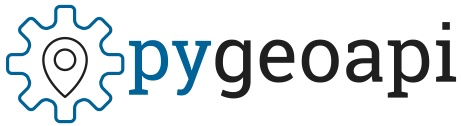
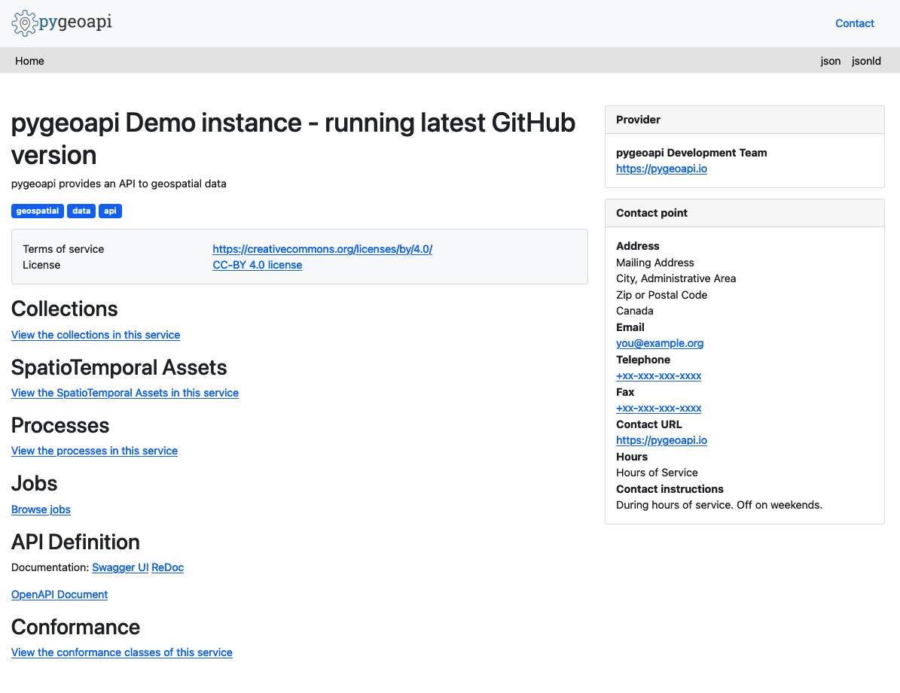
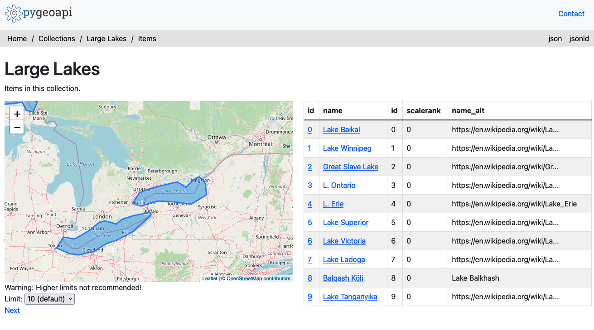

An OGC API to geospatial data


This presentation available at https://pygeoapi.io/presentations/foss4g2021
Table of contents
- Project overview
- Core capabilities
- New features
- Selected featured projects
- Roadmap
- Support
Project overview
Say hello to pygeoapi
 A Geopython project
A Geopython project- Created by Tom Kralidis in 2018 on Valentine's Day with ❤️
- OSGeo Community Project
Project Overview
- Geospatial data Web API framework via OGC API
- REST/JSON/OpenAPI/Swagger
- OGC Compliant
- OSGeo Community Project
- International team (Canada, Netherlands, Greece, Italy, New Zealand, United States)
- Numerous core contributors
- 21000 upstream contributors (dependencies)
Technical Overview
- Core abstract API; web framework agnostic (default Flask)
- YAML configuration (metadata, dataset connections)
- Automated OpenAPI document generation and data binding
- Robust plugin framework (data connections, formats, processing)
- Easy deployment (pip install, Docker, conda, UbuntuGIS)
- Minimal core dependencies
Provider plugin framework
- Features (Elasticsearch, CSV, GeoJSON, OGR, MongoDB)
- Coverages (xarray, rasterio)
- Tiles (MinIO, ZXY directory tree)
- Records (Elasticsearch, TinyDB)
- Implement your own!
Processing framework
- Expose Python workflow as processes
- Process manager support for job control (TinyDB)
- Implement your own!
Implementing your own Plugin
- Develop / propose / maintain as core plugin
- Develop / maintain in your own repository
schema.org

- Lower the barrier to data search
- HTML encoding is annotated as schema.org/Dataset to facilitate search engines
- Google dataset search locates pygeoapi datasets
Linked Data - JSON-LD
- JSON-LD provided as additional representation
- Default out of the box functionality for most pygeoapi resources / endpoints
- Additional configuration
Deploying
Numerous deployment options
- PyPI
- UbuntuGIS
- Docker
- Conda
- FreeBSD
Core Capabilities

OpenAPI

OGC API - Features

OGC API - Coverages

OGC API - Records

OGC API - Tiles

OGC API - Processes

OGC API - Environmental Data Retrieval

SpatioTemporal Asset Catalog (STAC)

HTML templating

New Features
- STAC (June 2020)
- OGC API - Coverages (August 2020)
- OGC API - Tiles (September 2020)
- Custom HTML templates (September 2020)
- OGC API - Records (February 2021)
- OGC API - Environmental Data Retrieval (March 2021)
- Multilingual support (June 2021)
- Config / OpenAPI schema validation (July 2021)
- CQL (July 2021)
Selected recent projects
Meteorological Service of Canada GeoMet platform
- OGC web services platform of Canadian weather, climate and water data
- Realtime weather/hydrometric data
- Numerical weather prediction
- Hydrometric and Climate archives
- Raster drilling
https://api.weather.gc.ca
COVID-19 Demo Server
- Official data about the situation in the world, The Netherlands and Italy since the beginning
- Several collections with cases per regions, provinces and municipalities
- Powerful use of the OGR provider with remote ArcGIS services and CSV resources from Github
- More info with several possible queries here
https://demo.pygeoapi.io/covid-19/
US Internet of Water (Duke University)
Modern Water Data Infrastructure
- Reference feature catalog (US)
- California multi-agency comprehensive streamgage metadata catalog
- SensorThings data demonstrator (real-time water measurements)
USGS Water Resources
Canada Open Disaster Risk Reduction Platform (OpenDRR)
Open Source platform to support disaster risk management, starting with earthquake risk reduction
In development
API: https://github.com/OpenDRR/opendrr-api
EuroDataCube / EOXHub
- EOX IT Services GmbH https://eox.at
- headless notebook execution in users EOxHub workspaces
- EOXHub user workspace on demand data processing (to be launched soon)
Sprint Participation
- Participation at numerous code sprints (OGC / OSGeo / Apache)
- Feature development
- Interoperability testing
Roadmap
OGC API Support
| Standard | Status |
|---|---|
| OGC API - Common | Implementing |
| OGC API - Features | Compliant/Reference Implementation |
| OGC API - Coverages | Implementing |
| OGC API - Tiles | Implementing |
| OGC API - Processes | Implementing |
| OGC API - Records | Implementing |
| OGC API - Environmental Data Retrieval | Implementing |
| OGC API - Maps | In Development |
| OGC API - Styles | Planned |
Roadmap
- API Refactor
- Transactions
- Admin UI
- schema.org/JSON-LD enhancements
- Content negotiation (e.g. Response as GeoPackage, GML,...)
- OSGeoLive
Django app
- Django application project
- django_app folder next to
flask_app.pyandstarlette_app.py urls.pywith routesviews.pywith the binding of pygeoapi core API into the process of Request/Responsesettings.pywith the pygeoapi configuration path- Add
--djangooption to the cli command to serve the usual Django server - Make the Django app reusable
- Challenges:
- Use DRF serializers
- Inject generated OpenAPI document into drf-spectacular
- Inject Jinja2 templates or use Django templates natively
- https://github.com/geopython/pygeoapi/issues/586
GeoNode integration
- Next generation GeoNode API GNIP-51
- New v2 GeoNode REST API has been merged into master: GNIP-79
- Discussion needed to determine how GeoNode could use pygeoapi as a backend:
- Metadata (Resource base model -- similar to pycsw GeoNode integration)
- Direct Elasticsearch integration
- For OGC API Features, Maps, Styles, Tiles, Coverages (similar to GeoServer and QGIS Server)
- How would auth work in this case?
Support
Need support for WFS3.0???
GeoCat can help you

Links
- Home: https://pygeoapi.io
- Twitter: https://twitter.com/pygeoapi
- Docs: https://docs.pygeoapi.io
- Demo: https://demo.pygeoapi.io
- GitHub: https://github.com/geopython/pygeoapi
- Docker: https://hub.docker.com/r/geopython/pygeoapi
- Chat: https://gitter.im/geopython/pygeoapi
- Mail: https://lists.osgeo.org/mailman/listinfo/pygeoapi
Thank you!
@tomkralidis @JMendesDeJesus @justb4 @pvgenuchten @tzotsos @alpha-beta-soup @francbartoli